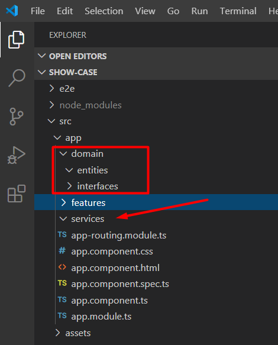
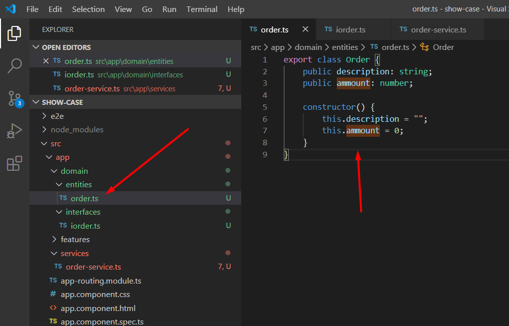
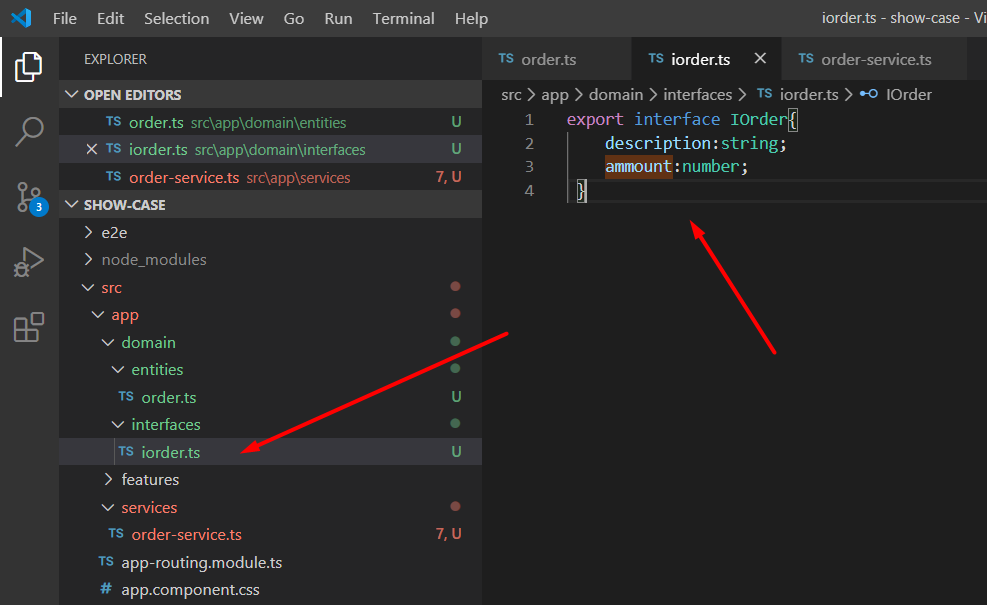
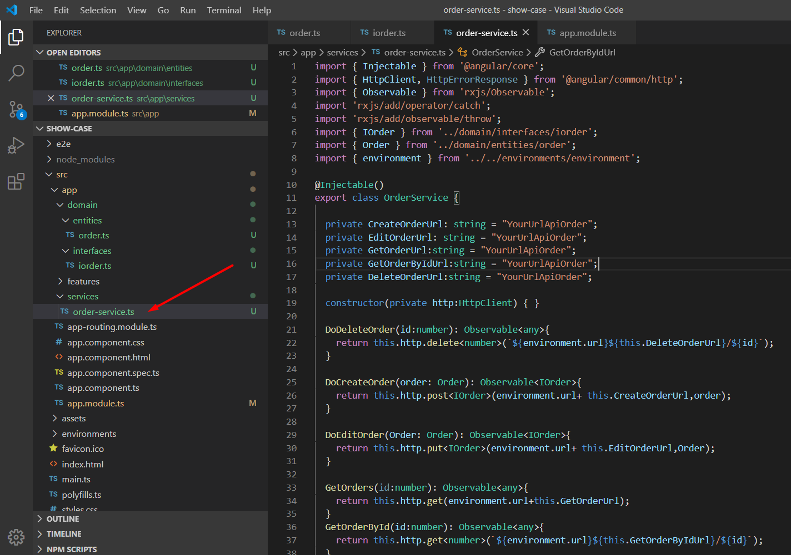
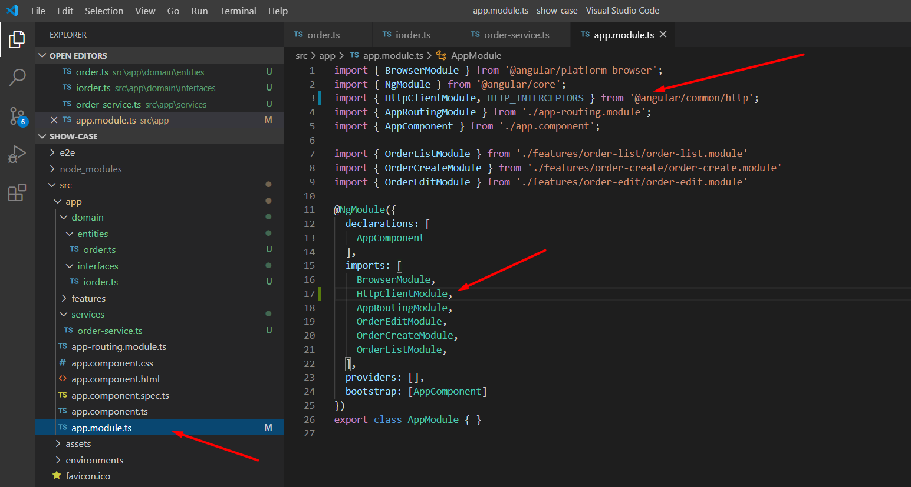
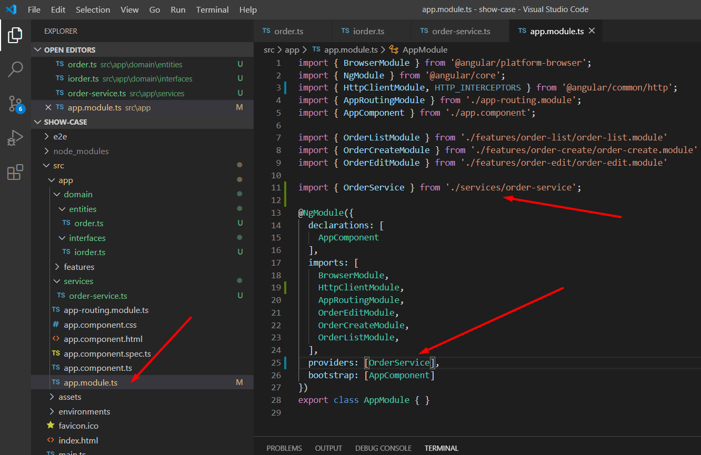

Creating Angular services
In this session we will create the layer responsible for the services that will operationalize our crud using the api REST standard.
First we will create within the 'app' directory 2 new layers, domain and services and within the domain layer we will create entities and interfaces.

Now we are going to create the class that we will use in our crud and the interface. Remembering that here we will just demonstrate. we will not connect to any backend api we will just simulate and show you how it would work.Let's call our order class and the structure for creating the interface and class will be shown below.



Then we need to install the observable package with the command 'npm install --save rxjs-compat' and import in our main module the library of the angular responsible for making the requests

The observable works as a promise, there in our component we will be able to use it to get the exact moment of the data return, we will see an example of this in practice in the next session. In our class of services we also use the @injectable feature of angular. It works as a dependency injection that can be invoked on our components. For this we also need to import our injectable class in our main module as a provider as shown below.

Ready! Our service layer is completed, in the next session we will apply it and finalize our CRUD in our components. Always remembering that our project created here is available on github